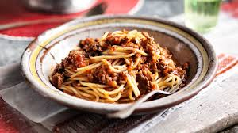

Spaghetti Bolognese

Our best ever spaghetti bolognese is super easy and a true Italian classic with a meaty, chilli sauce. This pasta bolognese recipe is sure to become a family favourite.
Ingredients
Bolognese
- 1 tbsp Olive Oil
- 4 Rashers Smoked Streaky Bacon, finely Chopped
- 2 Garlic Clove
- 2 Carrots, trimmed and finely chopped
- 2 Celery Sticks, finely chopped
- 2 Medium Onions, finely chopped
- 2-3 Sprigs Rosemary Leaves Picked & Finely Chopped
- 500g Beef Mince
For Bolognese Sauce
- 2 x 400g Tins Plum Tomatoes
- Small Pack Basil, 3/4 finely chopped
- 1 tsp Dried Oregano
- 2 Fresh Bay Leaves
- 2 tbsp Tomato Puree
- 1 Knorr Red Wine Stock Pot
- 1 Red Chilli, finely chopped (Deseeded optional)
Season & Serve
- 75g Parmesan Grated
- 400g Spaghetti
- Garlic Bread (Optional)
Method
- Put a large saucepan on a medium heat and add 1 tbsp olive oil.
- Add 4 finely chopped bacon rashers and fry for 10 mins until golden and crisp.
- Reduce the heat and add the 2 onions, 2 carrots, 2 celery sticks, 2 garlic cloves and the leaves from 2-3 sprigs rosemary, all finely chopped, then fry for 10 mins. Stir the veg often until it softens.
- Increase the heat to medium-high, add 500g beef mince and cook stirring for 3-4 mins until the meat is browned all over.
- Add 2 tins plum tomatoes, the finely chopped leaves from ¾ small pack basil, 1 tsp dried oregano, 2 bay leaves, 2 tbsp tomato purée, 1 Knorr Red Wine Stock Pot, 1 deseeded and finely chopped red chilli (if using), 125ml water and 6 halved cherry tomatoes. Stir with a wooden spoon, breaking up the plum tomatoes.
- Bring to the boil, reduce to a gentle simmer and cover with a lid. Cook for 1 hr 15 mins stirring occasionally, until you have a rich, thick sauce.
- Add the 75g grated parmesan, check the seasoning and stir.
- When the bolognese is nearly finished, cook 400g spaghetti following the pack instructions.
- Drain the spaghetti and either stir into the bolognese sauce, or serve the sauce on top. Serve with more grated parmesan, the remaining basil leaves and crusty bread, if you like.